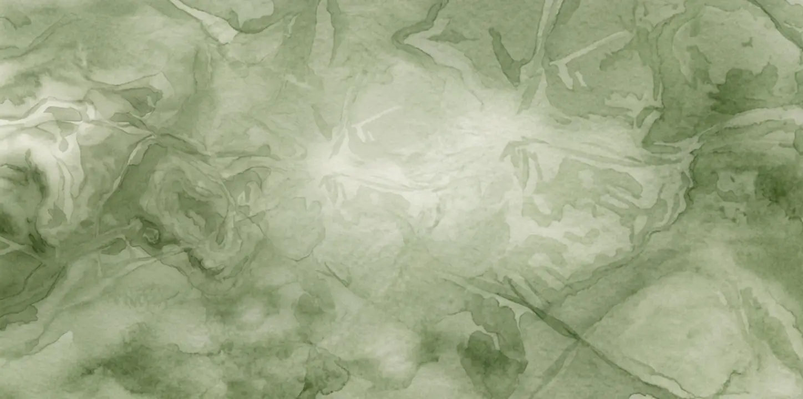

PORTFOLIO
AF ERICA THYGESEN
SITES INDHOLD
På dette site vil du blandt andet blive kloger på hvad jeg har gået og brugt det sidste halve år af min studietid som multimediedesigner på Erhvervsakademi København.
Du vil kunne dykke ned i mit portfolio over 1. semester, hvor du
vil finde hvilke forskellige typer af projekter jeg har fordybet mig i, samt hvilken proces jeg har været i gennem.